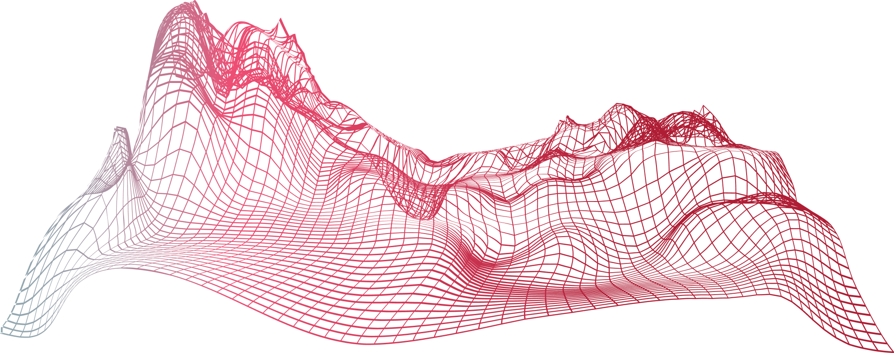

Frequently Asked Questions
What is the DRAAS Remote Technical Operations Center(RTOC)?
Centrifuge Optimization quantifies barite recovery, base oil losses and recovery, and provides daily totalizers for every fluid and solids stream. These insights give operators a continuous, verifiable record of performance. transforming fluid management from guesswork into actionable metrics.How does DRAAS reduce drilling costs?
Centrifuge Optimization quantifies barite recovery, base oil losses and recovery, and provides daily totalizers for every fluid and solids stream. These insights give operators a continuous, verifiable record of performance. transforming fluid management from guesswork into actionable metrics.What is NVICTA AI and how does it work?
Centrifuge Optimization quantifies barite recovery, base oil losses and recovery, and provides daily totalizers for every fluid and solids stream. These insights give operators a continuous, verifiable record of performance. transforming fluid management from guesswork into actionable metrics.What is the DRAAS Remote Technical Operations Center(RTOC)?
Centrifuge Optimization quantifies barite recovery, base oil losses and recovery, and provides daily totalizers for every fluid and solids stream. These insights give operators a continuous, verifiable record of performance. transforming fluid management from guesswork into actionable metrics.How does DRAAS reduce drilling costs?
Centrifuge Optimization quantifies barite recovery, base oil losses and recovery, and provides daily totalizers for every fluid and solids stream. These insights give operators a continuous, verifiable record of performance. transforming fluid management from guesswork into actionable metrics.What is NVICTA AI and how does it work?
Centrifuge Optimization quantifies barite recovery, base oil losses and recovery, and provides daily totalizers for every fluid and solids stream. These insights give operators a continuous, verifiable record of performance. transforming fluid management from guesswork into actionable metrics.